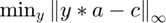

Contents
% Author: Justice Amoh % Description: ENGS 104 - Optimization: Assignment 2 % Date: 10/26/2015
PROBLEM 1
Linear program in augmented form:  such that .
such that .
% load file a2p1.mat with vars a, b and c. load data/a2p1.mat
Part A
Which feasible solution has the largest value for ?
f = zeros(size(c)); f(23) = -1; Aeq = a; beq = b; lb = 0; [x,fval] = linprog(f,[],[],Aeq,beq,lb);
Part B
Is there a basic feasible solution involving  ? Set to 1, all other unknowns to zero and run LP
? Set to 1, all other unknowns to zero and run LP
f = zeros(size(c));
f(4)=1; f(12) = 1; f(23) = 1;
Aeq = a;
beq = b;
lb = 0;
[x,fval] = linprog(f,[],[],Aeq,beq,lb);
% *Answer* : Yeah, there is a feasible solution involving just $x_{4}, x_{12}, x_{23}$
Part C
f = c; Aeq = a; beq = b; lb = 0; [x,fval] = linprog(f,[],[],Aeq,beq,lb);
Warning: Length of lower bounds is < length(x); filling in missing lower bounds
with -Inf.
Exiting: One or more of the residuals, duality gap, or total relative error
has stalled:
the dual appears to be infeasible (and the primal unbounded).
(The primal residual < TolFun=1.00e-08.)
Warning: Length of lower bounds is < length(x); filling in missing lower bounds
with -Inf.
Exiting: One or more of the residuals, duality gap, or total relative error
has stalled:
the dual appears to be infeasible (and the primal unbounded).
(The primal residual < TolFun=1.00e-08.)
Warning: Length of lower bounds is < length(x); filling in missing lower bounds
with -Inf.
Exiting: One or more of the residuals, duality gap, or total relative error
has stalled:
the dual appears to be infeasible (and the primal unbounded).
(The primal residual < TolFun=1.00e-08.)
PROBLEM 2
Part A - Infinity Norm
Question: 
aa = a'; bb = c'; [n,m] = size(aa); Aineq = [+aa -ones(n,1); ... -aa -ones(n,1)]; bineq = [bb ; -bb]; f = [zeros(1,m) 1]; [x,fval] = linprog(f,Aineq,bineq,[],[]); % check dimensionality fprintf('Linfty Norm - Minimum value is: %.2f \n',fval)
Part B - L1 Norm
Question:
aa = a'; bb = c'; [n,m] = size(aa); Aineq = [+aa -eye(n); ... -aa -eye(n)]; bineq = [+bb ; -bb]; f = [zeros(1,m) ones(1,n)]; [u,fval] = linprog(f,Aineq,bineq,[],[]); fprintf('L1 Norm - Minimum value is: %.2f \n',fval) x_l1 = u(m+1:end);
Part C
Question:
A = a';
B = c';
z = A' * ((A*A')\ B);
fval = norm((A*z)-B,2);
fprintf('L2 Norm - Minimum value is: %.2f \n',fval);
Part D
Question:
aa = a'; bb = c'; [n,m] = size(aa); Aineq = [+aa -eye(n) zeros(n,1); ... -aa -eye(n) zeros(n,1); ... zeros(n,m) eye(n) -ones(n,1)]; bineq = [+bb ; -bb; zeros(n,1)]; f = [zeros(1,m) ones(1,n) 1]; [w,fval] = linprog(f,Aineq,bineq,[],[]); fprintf('L1 + Infinity Norm - Minimum value is: %.2f \n',fval)
Optimization terminated. Linfty Norm - Minimum value is: 4.18 Optimization terminated. L1 Norm - Minimum value is: 208.14 Warning: Matrix is close to singular or badly scaled. Results may be inaccurate. RCOND = 1.400618e-19. L2 Norm - Minimum value is: 299.20 Optimization terminated. L1 + Infinity Norm - Minimum value is: 215.48
PROBLEM 3
Question Solve max-flow problem - Primal
Aeq = [ 1 -1 0 -1 0 0 0 0 ; ... 0 0 0 0 -1 1 -1 0 ; ... 0 1 -1 0 1 0 0 0 ; ... 0 0 0 1 0 0 1 -1 ]; [n,m] = size(Aeq); beq = zeros(n,1); A = eye(m); b = [13 5 6 1 7 12 1 4]'; f = zeros(1,m); f(1)=-1; f(6)=-1; lb = 0; [x_primal,fval] = linprog(f,A,b,Aeq,beq,lb);
Warning: Length of lower bounds is < length(x); filling in missing lower bounds with -Inf. Optimization terminated.
PROBLEM 4
Question Max-flow problem - Dual
Aeq = [ 1 -1 0 -1 0 0 0 0 ; ... 0 0 0 0 -1 1 -1 0 ; ... 0 1 -1 0 1 0 0 0 ; ... 0 0 0 1 0 0 1 -1 ]; Aeq = -Aeq'; [n,m] = size(Aeq); A = eye(m); c = zeros(n,1); c(1)=-1; c(6)=-1; b = [13 5 6 1 7 12 1 4]'; lb = 0; % [x_dual, fval] = linprog(b,[],[],Aeq,c,lb);
PROBLEM 5
Equality Constraints a = @(x) x(1) + x(2) + x(3) -30; b = @(x) x(1)^2 + 2*x(2)^4 +3* x(3)^2 - 2; c = @(x) 2*(x(1)+40)^2 + (x(2)-30)^2 + (x(3)+20)^4 - 1;
a = [1 1 1 0 0 0 0 0 0]; b = [0 0 0 1 1 1 0 0 0]; c = [0 0 0 0 0 0 1 1 1]; gfun = @p5con; f = @(x) norm(a-b,2).^2 + norm(c-b,2).^2 + norm(a-c,2).^2; x0 = [-2 1 0 1 4 1 1 2 3]; options = optimoptions('fmincon','Algorithm','interior-point','Display','iter'); [x,fval] = fmincon(f,x0,[],[],[],[],[],[],gfun,options);
First-order Norm of
Iter F-count f(x) Feasibility optimality step
0 10 1.800000e+01 2.840e+05 0.000e+00
1 20 1.800000e+01 9.095e+04 1.033e+01 1.885e+01
2 30 1.800000e+01 2.990e+04 2.003e+00 4.559e+00
3 40 1.800000e+01 1.067e+04 8.717e-01 3.720e+00
4 50 1.800000e+01 4.903e+03 3.278e-01 3.685e+00
5 60 1.800000e+01 3.930e+03 6.854e-01 7.812e+00
6 72 1.800000e+01 2.444e+03 7.801e+00 1.129e+01
7 82 1.800000e+01 7.284e+02 1.018e+00 1.739e+01
8 92 1.800000e+01 2.387e+02 3.785e-01 1.119e+01
9 102 1.800000e+01 1.882e+02 1.224e+00 9.942e+00
10 112 1.800000e+01 1.265e+02 9.893e-01 5.935e+00
11 122 1.800000e+01 8.233e+01 1.846e+00 7.519e+00
12 132 1.800000e+01 2.387e+01 7.655e-01 3.713e+00
13 142 1.800000e+01 6.621e+00 3.128e-01 2.023e+00
14 152 1.800000e+01 1.774e+00 1.417e-01 1.176e+00
15 162 1.800000e+01 4.231e-01 6.045e-02 5.907e-01
16 172 1.800000e+01 6.230e-02 1.820e-02 2.283e-01
17 182 1.800000e+01 2.305e-03 1.418e-03 4.393e-02
18 192 1.800000e+01 3.627e-06 1.219e-05 1.744e-03
19 202 1.800000e+01 7.693e-12 3.860e-09 2.752e-06
Local minimum found that satisfies the constraints.
Optimization completed because the objective function is non-decreasing in
feasible directions, to within the default value of the function tolerance,
and constraints are satisfied to within the default value of the constraint tolerance.